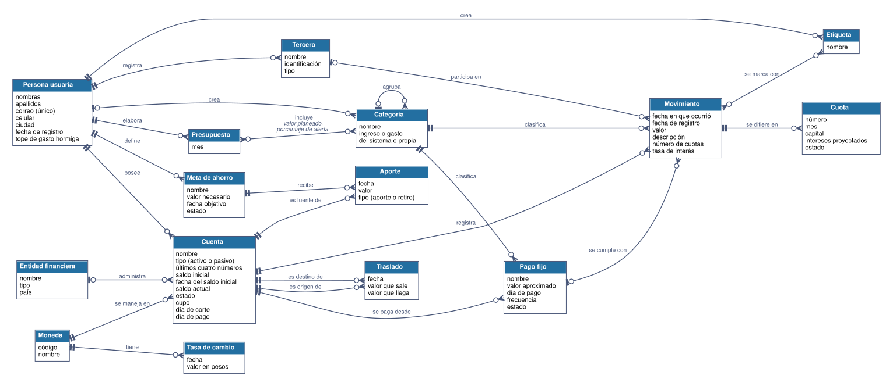

Retroalimentación del taller
Cómo lo resolvieron Catalina y Julián
La validación de los requerimientos y del modelo conceptual de la plataforma.
Apreciados estudiantes:
Después de la conversación que escucharon en el taller, Julián volvió a reunirse dos veces con Catalina: primero para validar con ella los requerimientos y después para validar el primer modelo conceptual. En esta parte van a escuchar esas dos reuniones y a comparar su propuesta con la de Julián.
La solución de Julián es una forma de resolver el caso. Cuando su propuesta sea distinta, la referencia para decidir es lo que dijo Catalina: una alternativa que corresponde con lo que ella explicó y que permite responder sus preguntas también es una buena solución.
Antes de escuchar
Cómo van a comparar
Tengan abierto su documento compartido con la propuesta del grupo y agreguen al final un apartado de comparación. Les dejo un formato que pueden copiar y pegar, y como en el taller, son libres de organizarse de otra forma.
Mientras escuchan, cada vez que Julián presente un requerimiento, una regla, una consulta, un concepto o una relación, búsquenlo en su propuesta y anoten si coincide, si les faltó o si lo resolvieron de otra manera. Presten especial atención a los momentos en que Catalina corrige a Julián: revisen si su propuesta tenía la misma situación. Como en el taller, una persona del grupo reproduce el audio para todos y lo pausa cuando necesiten anotar.
Al terminar, respondan juntos las tres preguntas del final del formato. Si trabajan por su cuenta, hagan la comparación de manera individual.
Comparación con la propuesta de Julián
| Elemento | Lo que propusimos | Lo que propuso Julián | Coincide, nos faltó o es distinto | Por qué |
|---|---|---|---|---|
¿Qué decisiones tomaron igual que Julián y con qué argumentos?
¿Qué les faltó, y en qué parte de la conversación estaba esa información?
¿Qué resolvieron de forma distinta, y su alternativa corresponde con lo que dijo Catalina?
Las reuniones
La validación de los requerimientos
Audio de la validación de los requerimientos
El audio todavía no está disponible en esta página.
Las reuniones
La validación del modelo conceptual
Audio de la validación del modelo conceptual
El audio todavía no está disponible en esta página.
En la siguiente diapositiva encuentran el diagrama del modelo, con las correcciones de Catalina incorporadas, para que lo comparen con el de ustedes.
El modelo de Julián
Modelo conceptual de la plataforma de finanzas personales

Figura 1. Modelo conceptual de la plataforma de finanzas personales. Abrir la imagen en tamaño completo
Recórranlo relación por relación, leyéndolas en los dos sentidos, y compárenlo con el suyo. Fíjense en la relación entre Presupuesto y Categoría, que lleva dos características propias, y en las dos relaciones que unen a Cuenta con Traslado.
Lo que aprendemos
Lo que nos enseña la validación de los requerimientos
Quién puede ver cada información
Julián supuso que el administrador podía ver los movimientos de las personas, y Catalina precisó que solo ve cifras agregadas. Los requerimientos también definen qué información puede ver cada tipo de usuario, y esa decisión le corresponde a quien conoce el negocio. En la plataforma de eventos van a encontrar decisiones parecidas sobre los datos de los participantes.
Un hábito que se convierte en datos
Registrar el gasto el mismo día es una recomendación de Catalina para las personas. Escrita como regla de los datos, impediría registrar un gasto días después, que es justamente lo que hace la mayoría de la gente. Por eso queda como una expectativa de comportamiento, y lo que se guarda son las dos fechas, la del gasto y la del registro: con ellas Catalina puede saber qué tan al día va cada persona.
Lo que se queda por fuera
Al escuchar la lista completa, Catalina notó que faltaban dos necesidades que ella había mencionado: cerrar una cuenta sin perder su historia y copiar el presupuesto del mes anterior. Validar con la experta sirve para confirmar lo que se entendió y también para detectar lo que se quedó por fuera al organizar la información.
Lo que aprendemos
Lo que nos enseña la validación del modelo
Las excepciones definen el mínimo
Toda cuenta tiene una entidad financiera, menos el efectivo. Esa excepción hace que, del lado de la entidad, la cardinalidad mínima sea cero: una cuenta tiene cero o una entidad. Cuando la experta dice todas, menos..., está definiendo una cardinalidad mínima.
Leer en los dos sentidos
Un movimiento puede tener varias etiquetas, y una etiqueta agrupa muchos movimientos. Leída en un solo sentido, la relación parecía de uno a muchos; leída en los dos, es de muchos a muchos. En la segunda entrega van a ver cómo se resuelve esta relación en el modelo lógico.
Características de una relación
Los ochocientos mil pesos planeados para mercado en enero dependen a la vez del presupuesto y de la categoría. Por eso el valor planeado y el porcentaje de alerta son características de la relación entre los dos conceptos.
Dos relaciones entre los mismos conceptos
Cada traslado tiene una cuenta de origen y una de destino. La cuenta se relaciona dos veces con el traslado, y cada relación tiene su propio nombre y su propio significado.
Las consultas validan el modelo
Para confirmar el modelo, Julián lo recorrió con las preguntas de Catalina, como el costo del viaje a Cartagena por categoría. Si una consulta no encuentra sus datos al recorrer el modelo, falta un concepto, una característica o una relación.
Cierre
Para continuar
Si están en el encuentro sincrónico, cuando les avise regresen a la sala principal para contarme en pocas palabras cómo les fue con la experiencia: qué les resultó más difícil, qué descubrieron y qué ajustarían en su propuesta.
El recorrido que hicieron, escuchar, especificar, modelar y validar con la experta, es el mismo que van a seguir en la primera entrega del proyecto con su plataforma de eventos y networking. Les recomiendo guardar su documento con la propuesta y la comparación, porque les va a servir como referencia.
Quedo atenta a sus preguntas.